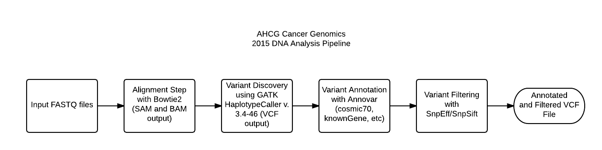

Welcome to Cancer Genomics.
Our goal is to create an open-source automated and easy to use tool for clinicians and patients to accurately assess patient risk level for ovarian cancer and provide them with complete drug information based on associated known mutations and RNA signatures.
Pipelines and Tools
Authors and Contributors
Khalid Alhumimidi
Poojitha Gundluru
Sung Im @sungshine
Yesh Kulasekarapandian
Vaishnavi Venkat
Xin Wu
Alyssa Kelley
Support or Contact
Having trouble with Pages? Check out our documentation or contact support and we’ll help you sort it out.